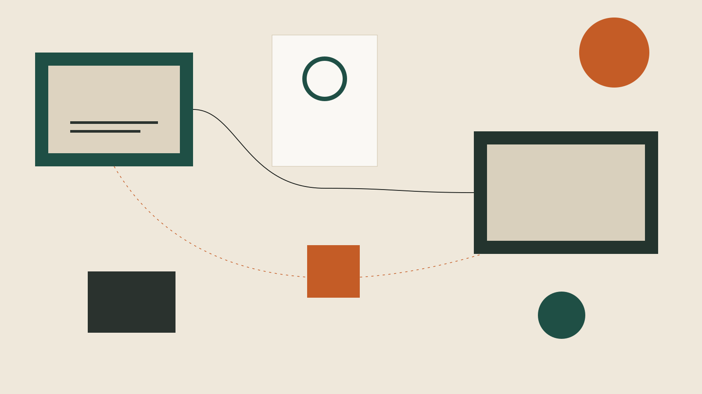

1. Il vuoto
Dove processo o filiera si ferma.
Open innovation
Scouting, programma, PoC o integrazione. Non una vetrina di pitch.
Parla di un programma
Dove processo o filiera si ferma.
Scouting complementare, non competitor in vetrina.
Use case, KPI, sprint, PoC.
Fit o no, con owner che operations digerisce.
PoC in Sardegna, operato con Zest. Il metodo vale anche fuori dai verticali bio-based.
Azienda: un buco da coprire. Startup: un banco industriale.